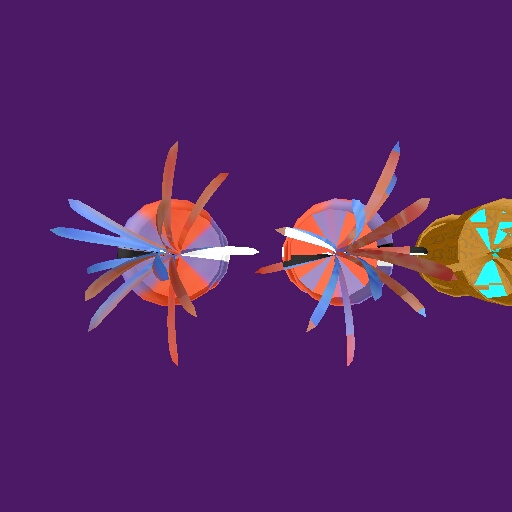
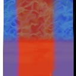

This texture (shown below) helps to see how it is placed. It shows us that the spherical(left object) is actually mapping the texture around twice. The shrinkwrap(center) wraps it only once. The red and blue coloring assist in identifying where the color is coming from. Note that the shrinkwraped plant's petals use their normals to gather color even from the far side of the cylinder which the shrinkwrap is coming from. I direct your attention to the inside lip of the center pot. The right side is blue. This is because we are seeing the backface of the lip, it's normal is facing outward and so gathers the blue from the right side. The petals on the right, however, are being viewed properly (not their backfaces) and we see that they are red, which is the color coming from the left side. The 'dirt' in the pot handles the shrinkwrap poorly however. It has normals which are near vertical, and show great discontinuity as to which side to gather color from.
